Windows本地密码破解(lc)实验
实验目的
1、 掌握帐号口令破解技术的基本原理、常用方法及相关工具
2、 掌握如何有效防范类似攻击的方法和措施
实验要求
1、 认真阅读和掌握本实验相关的知识点。
2、 上机实现软件的基本操作。
3、 得到实验结果，并加以分析生成实验报告。
注：因为实验所选取的软件版本不同，学生要有举一反三的能力，通过对该软件的使用能掌握运行其他版本或类似软件的方法。
实验步骤
（1）安装LC5。首先运行lc5setup.exe,如图1所示，接下来一直点击“Next”,直到点击“accept”接受协议。接下来进入界面如图2，选择安装路径，点击“Next”即选择默认得安装路径。一直“Next”，之后安装完成界面如图3，点击“Finish”完成安装。
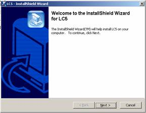
图1 LC5安装向导界面
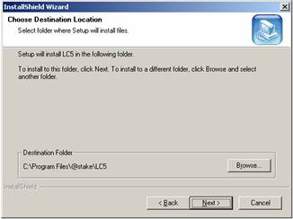
图2 选择LC5安装路径
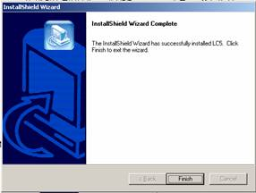
图3 安装完成界面
(2)破解LC5。依次点击“开始”－“程序”－“LC
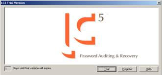
图4 LC5注册页面
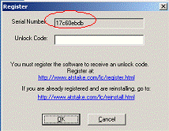
图5 LC5破解页面
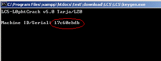
图6 运行kengen.exe
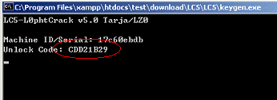
图7 得到破解码界面
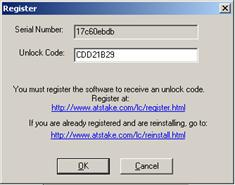
图8 输入破解码
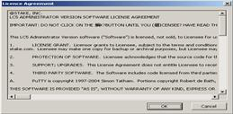
图9协议页面
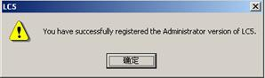
图10 完成注册
（3）安装Cain时软件会提示是否需要安装winpcap,选择“是”，由于软件自带winpcap安装包，所以不用再下载。
（4）事先在主机内建立用户名test，口令分别陆续设置为空、123123、security、security123进行测试。
（5）启动LC5，弹出来LC5的主界面如图11所示。
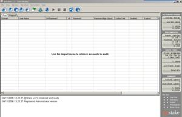
图11
LC5主界面
打开文件菜单，选择LC5向导，如图12所示。
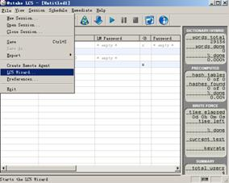
图12 开始 LC5向导破解功能
接着会弹出LC向导界面，如图13所示。

图13 LC5向导
单击Next按钮，弹出图14所示的对话框。
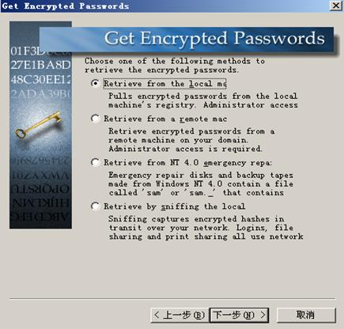
图14 选择导入加密口令的方法
如果破解本台计算机的口令，并且具有管理员权限，那么选择第一项“从本地机器导入（ retrieve from the local machine）”；如果已经进入远程的一台主机，并且有管理员权限，那么可以选择第二项“从远程电脑导入（retrieve from a remote machine）”，这样就可以破解远程主机的SAM文件；如果得到了一台主机的紧急修复盘，那么可以选择第三项“破解紧急修复盘中的SAM文件（retrieve from nt 4.0 emergency repaire disks）”；LC5还提供第四项“在网络中探测加密口令（retrieve by sniffing the local network）”的选项，LC5可以在一台计算机向另一台计算机通过网络进行认证的“质询/应答”过程中截获加密口令散列，这也要求和远程计算机建立连接。本实验破解本地计算机口令，所以选择“从本地计算机导入”，再单击Next按钮，弹出图15所示对话框：
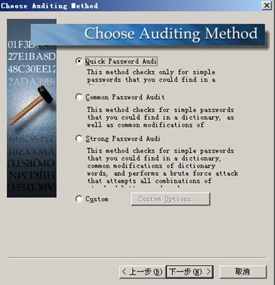
图15
选择破解方法
第一步所设置的是空口令，可以选择“快速口令破解（quick password auditing）”即可以破解口令，再单击Next按钮，弹出图16所示对话框。
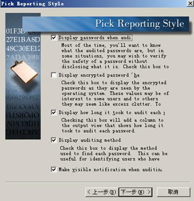
图16 选择报告风格
选择默认的选项即可，单击下一步，弹出如图17所示的对话框。
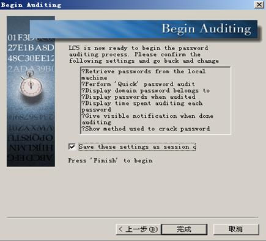
图17 开始破解
单击完成按钮，软件就开始破解账号了，破解结果如图18所示。
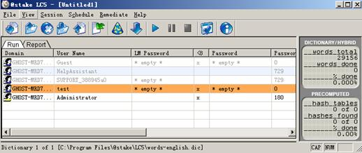
图18口令为空的破解结果
可以看到，用户test的口令为空，软件很快就破解出来了。
把test用户的口令改为“123123”，再次测试，由于口令不是太复杂，还是选择快速口令破解，破解结果入图19所示。
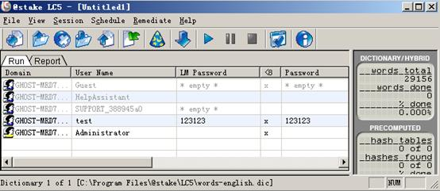
图19 口令为“123123”的破解结果
可以看到，test用户的口令“123123”，也很快就破解出来了。
把主机的口令设置的复杂一些，不选用数字，选用某些英文单词，比如security，再次测试，由于口令组合复杂一些，在图15中破解方法选择“普通口令破解（common password auditing）”，测试结果如图20所示。
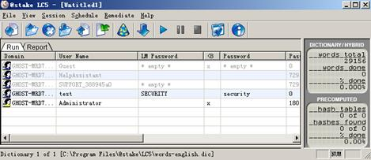
图20 口令为“security”的破解结果
可以看到，口令security也被破解出来，只是破解时间稍微有点长而已。
把口令设置的更加复杂一些，改为security123，选择“普通口令破解”，测试结果如图21所示。
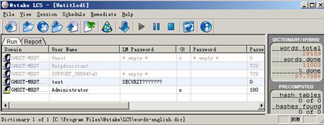
图21 口令为“security
可见，普通口令破解并没有完全破解成功，最后几位没破解出来，这时我们应该选择复杂口令破解方法，因为这种方法可以把字母和数字进行尽可能的组合，破解结果如图22所示。
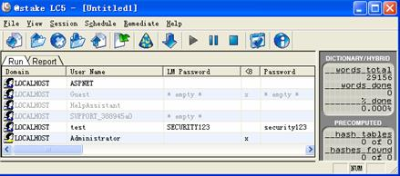
图22 口令为“security
如果用复杂口令破解方法破解结果，虽然速度较慢，但是最终还是可以破解。
我们可以设置更加复杂的口令，采用更加复杂的自定义口令破解模式，在图23中选择“自定义”，设置界面图23所示。
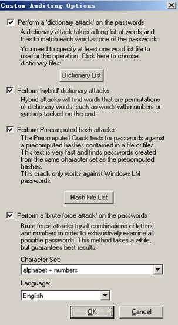
图23 自定义破解
其中，“字典攻击”中我们可以选择字典列表的字典文件进行破解，LC5本身带有简单的字典文件，也可以自己创建或者利用字典工具生成字典文件；“混合字典”破解口令把单词、数字或符号进行混合组合破解；“预定散列”攻击是